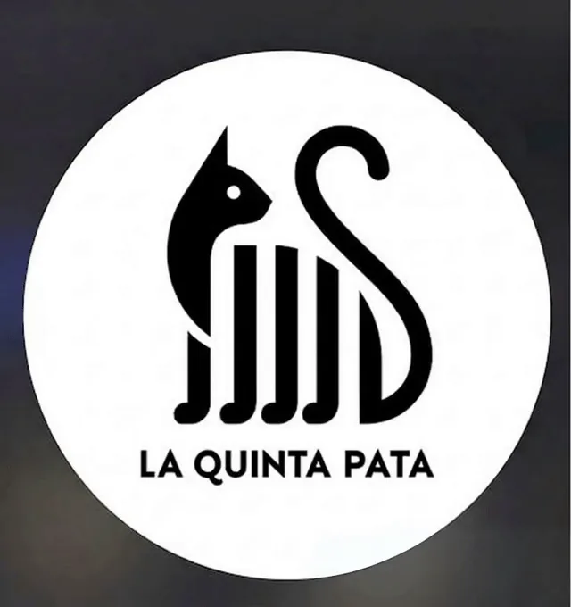
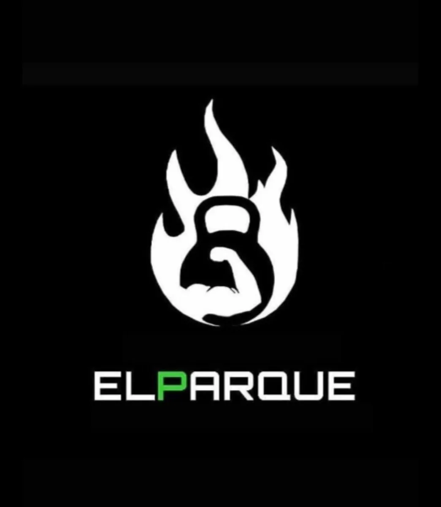
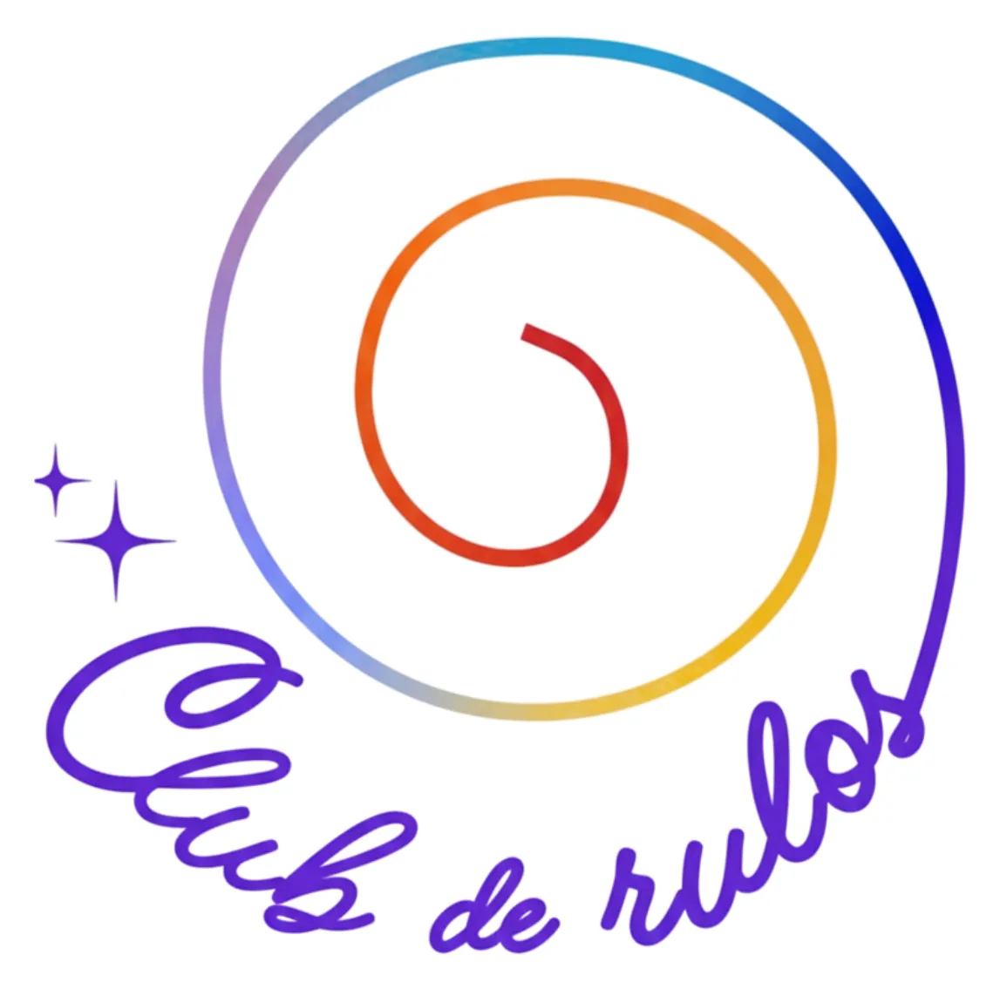
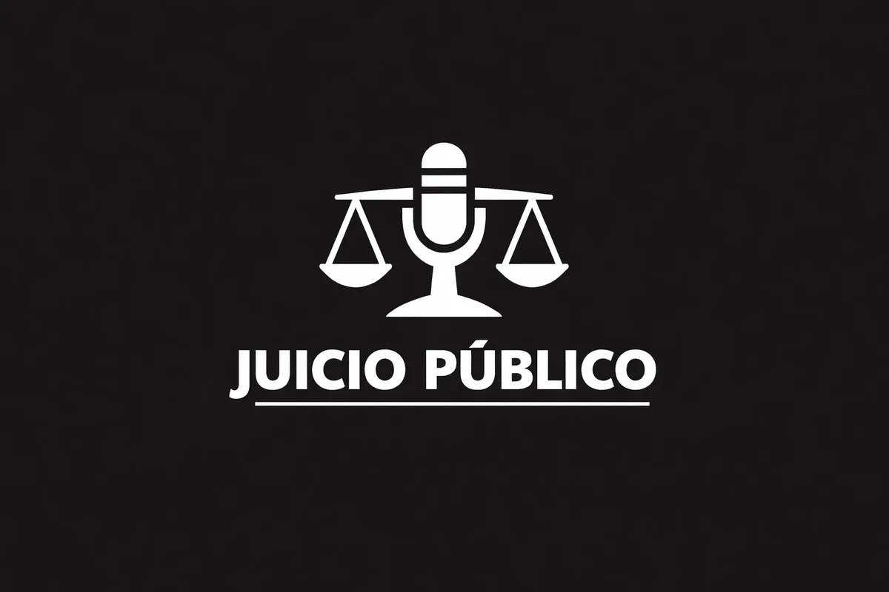

Proyecto en vivoLa Quinta Pata
Producto de debate social con identidad propia, experiencia de juego, salas y dinámica multijugador.
No es una lista de logos ni una vitrina de efectos. Es una selección de soluciones donde identidad, experiencia y operación tuvieron que hablar el mismo idioma.
Cada proyecto resolvió un problema distinto. Lo que comparten es una lógica: reducir fricción, ordenar el mensaje y convertir una idea en una experiencia utilizable.

Proyecto en vivoProducto de debate social con identidad propia, experiencia de juego, salas y dinámica multijugador.

Aplicación privadaPronósticos deportivos, accesos, puntajes, ranking y administración dentro de un sistema cerrado.

Agenda Pro Abrir sistemaReservas y gestión diseñadas para ordenar disponibilidad, confirmaciones y seguimiento sin fricción.
Presencia digital orientada a explicar los servicios, sostener la identidad y conducir a la reserva.

Proyecto en vivoUna experiencia participativa construida con roles, salas, turnos y ritmo de juego compartido.
No hacemos piezas sueltas. Conectamos identidad, producto y operación para que todo hable el mismo idioma.
Podemos ordenar la estrategia antes de sumar otra pieza aislada.
Agendar diagnóstico gratuito